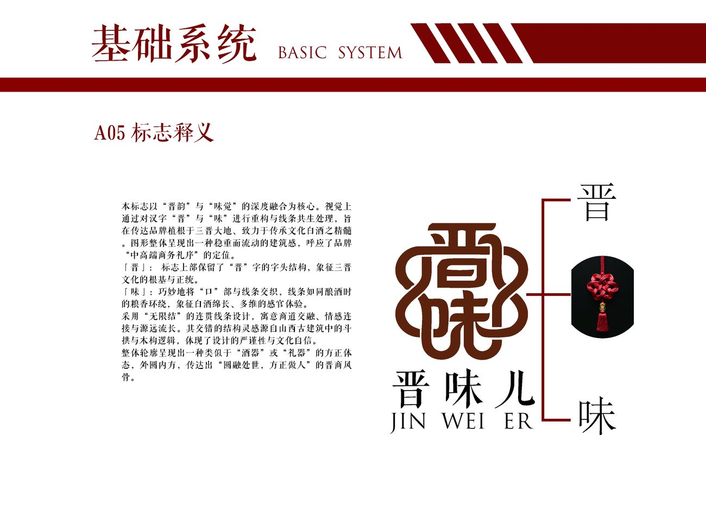
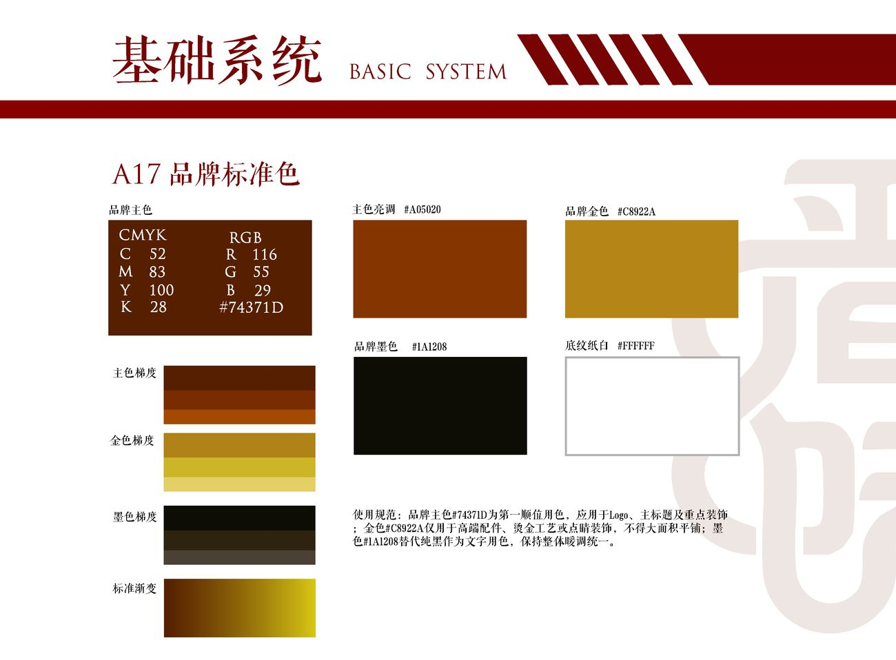
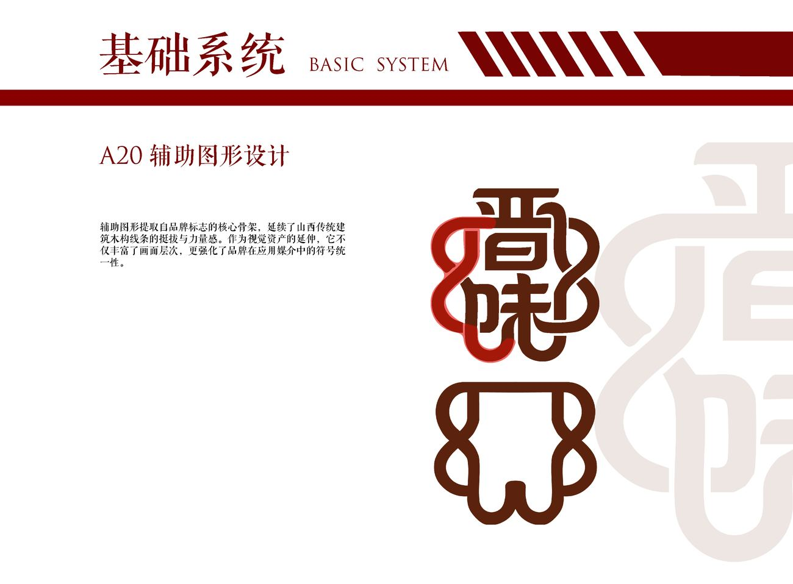
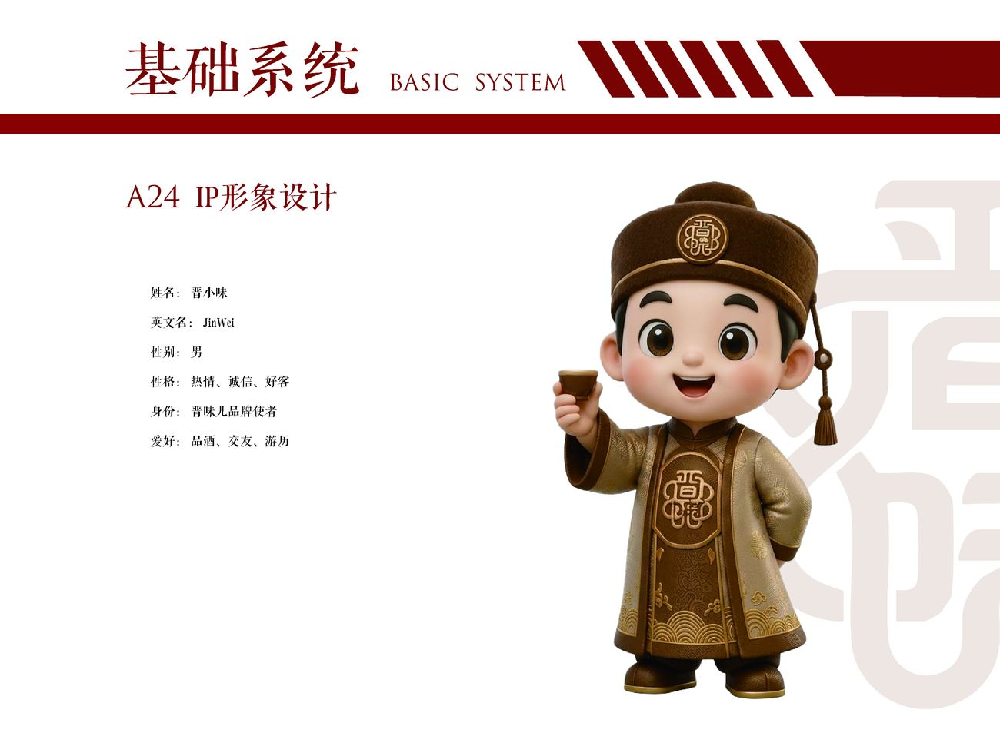
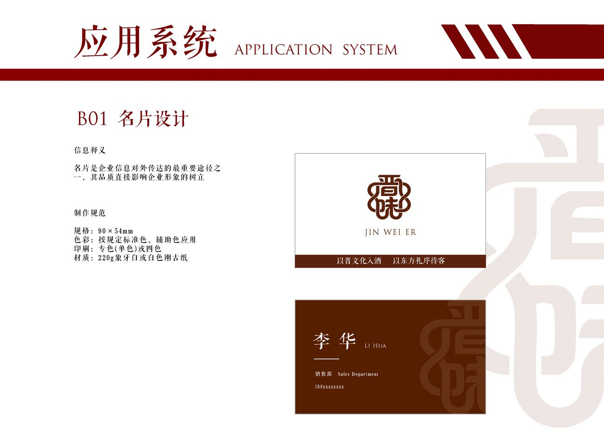
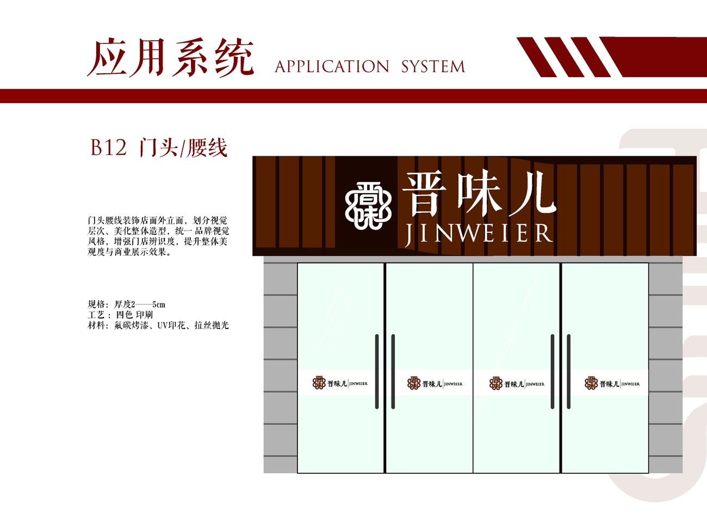
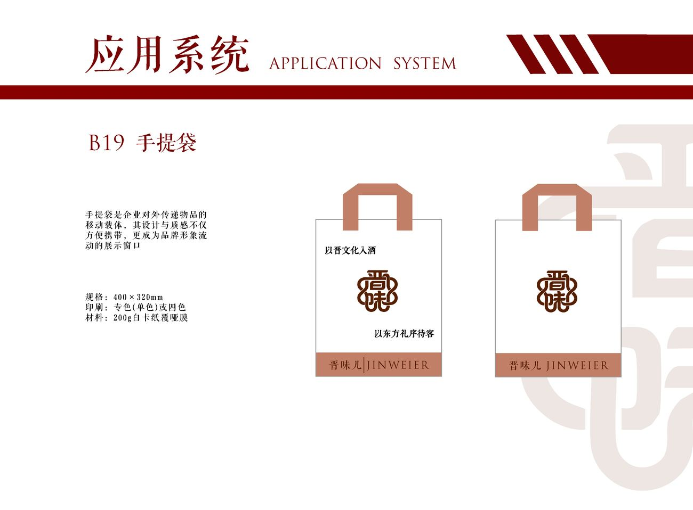

01 — 品牌 VI · 包装设计Brand Identity · Packaging
晋味儿白酒
品牌 VI 设计
Jinweier Baijiu
Brand Identity
为一款山西清香型白酒建立从品牌理念到落地物料的完整视觉系统，最终交付一本 52 页的 VI 手册。 A complete visual system for a Shanxi light-aroma baijiu — from brand rationale through to applied collateral, delivered as a 52-page identity manual.

Year
2025
Role
项目负责人Lead Designer
Client
晋味儿白酒
Scope
品牌定位 · 标志规范 · 色彩与辅助图形 · 21 项应用物料Positioning · Logotype · Colour & Graphics · 21 Applications
01 / 背景Context
同质化的清香赛道A saturated category
区域白酒的视觉长期集中在「年代感」与「窖藏」两个诉求上：烫金、龙凤、书法堆叠、深色木纹礼盒。这套语言在礼赠场景中有效，却让品牌难以被记住，也难以进入年轻消费者的日常餐桌。 Regional baijiu brands have long leaned on two tropes — heritage and cellar ageing — expressed through hot-stamping, dragon-phoenix motifs, stacked calligraphy and dark wood-grain boxes. Effective for gifting, but hard to remember and hard to place on a younger drinker's table.
晋味儿希望保留地域文化的根脉，同时把品牌从「宴席上的酒」重新定位为「可以自己喝、也拿得出手的酒」。 Jinweier wanted to keep its regional roots while repositioning from "a bottle for banquets" to "a bottle you drink yourself, and are still happy to gift".
02 / 策略Strategy
把「晋」从符号变成字形Turning place into letterform
核心策略是停止把地域文化当作贴图使用。「晋」不再以具象纹样出现，而是收成一枚印章式的几何字形——直线、直角、等宽的笔画收口，对应清香型白酒「清、净、爽」的味觉印象。 The core move was to stop treating regional culture as a decal. Rather than a figurative motif, "Jin" was condensed into a seal-like geometric letterform — straight lines, right angles, uniform stroke terminals — mapping to the clean, crisp profile of light-aroma baijiu.
色彩上主动放弃金色主调，转向朱红为主、米白为底。品牌语定为「以晋文化入酒，以东方礼序待客」，把待客礼序写进品牌定义里。 Gold was deliberately dropped as the lead colour in favour of crimson on an off-white ground. The brand line — "brew with Jin culture, serve with Eastern ritual" — writes hospitality into the definition itself.
03 / 执行Execution
A 基础系统 + B 应用系统A basic system + B application system
手册按两层搭建。A01–A25 为基础系统：品牌理念、品牌故事、品牌定位、文化调性、标志释义、标准制图、比例规范、安全距离、最小使用规范、标准色与辅助色、色彩使用规范、辅助图形与图案延展，直至吉祥物三视图与表情。 The manual is built in two layers. A01–A25 form the basic system: brand rationale, story, positioning and cultural tonality; logotype rationale, construction grid, proportion, clear space and minimum size; primary and secondary colour, colour-usage rules; auxiliary graphics and pattern extensions; through to the mascot's three-view drawing and expression sheet.
B01–B21 为应用系统：名片、信封、信纸、工作证、文件夹、胸牌、档案袋、宣传册、户外广告、广告伞、道旗、门头招牌、户外指示牌、电梯门、窗、工作服、工作帽、手提袋、笔记本与笔，共 21 项落地物料。 B01–B21 form the application system: business card, envelope, letterhead, staff ID, folder, badge, document bag, brochure, outdoor advertising, parasol, banner, shopfront signage, wayfinding, lift doors, windows, workwear, cap, paper bag, notebook and pen — 21 applied items in total.
04 / 成果Outcome
一套可以继续长大的系统A system that can keep growing
最终交付 52 页完整 VI 手册。所有规范都以可扩展的方式编写：系列新品上市时，沿用既有的网格、色彩比例与辅助图形即可完成延展，无须重新设计。 Delivery was a complete 52-page identity manual. Every rule was written to scale — future line extensions reuse the existing grid, colour ratios and auxiliary graphics rather than starting over.
品牌色彩Colour System
作品呈现Visuals






